Steps to unlock integration strategy
Agenda
- Unlock
- Security
- To Strangle
- Accountability
- Enablement & Automation
First Step : Unlock
-
Good
- It is cheap to start
- Unlock business mindset
- Will prove the concept
-
Bad
- You will need support
- Focused in projects
- Will create technical debts
-
Suggestion
- Start with your DevOps strategy
|
|
First Step : Unlock
What you need to know
- Basic
- API Design
- API Development
- Itermediate
Second Step : Security
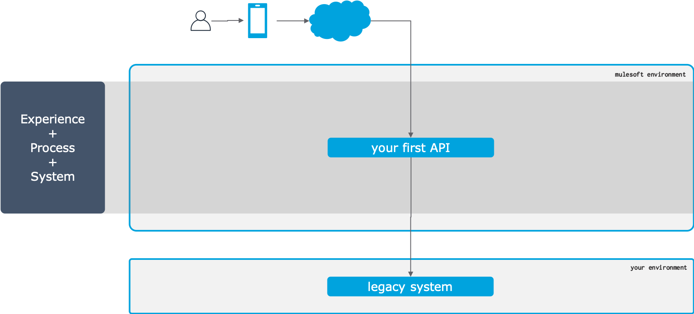
Second Step : Security
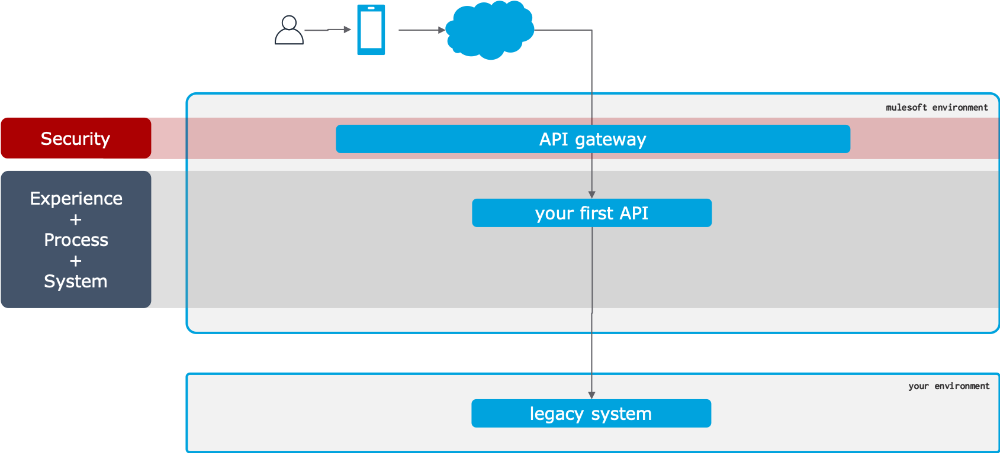
Second Step : Security
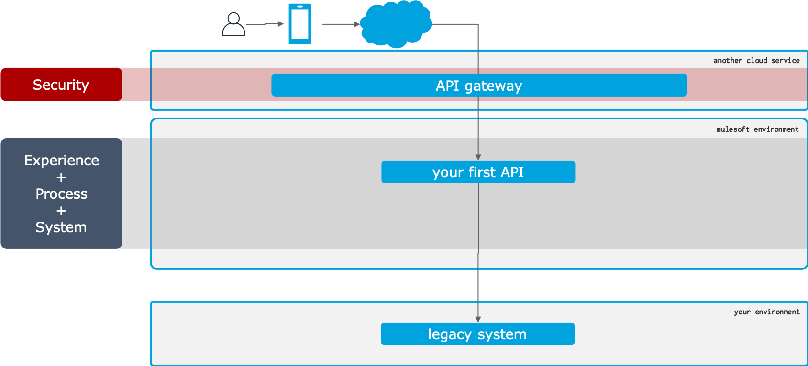
Second Step : Security
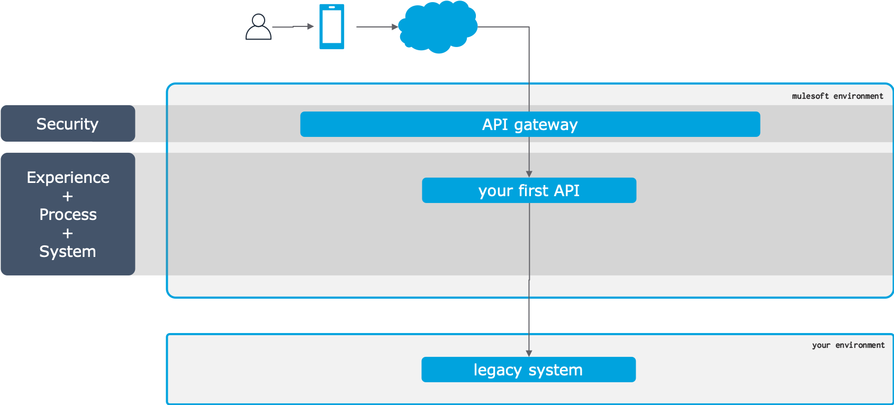
Second Step : Security
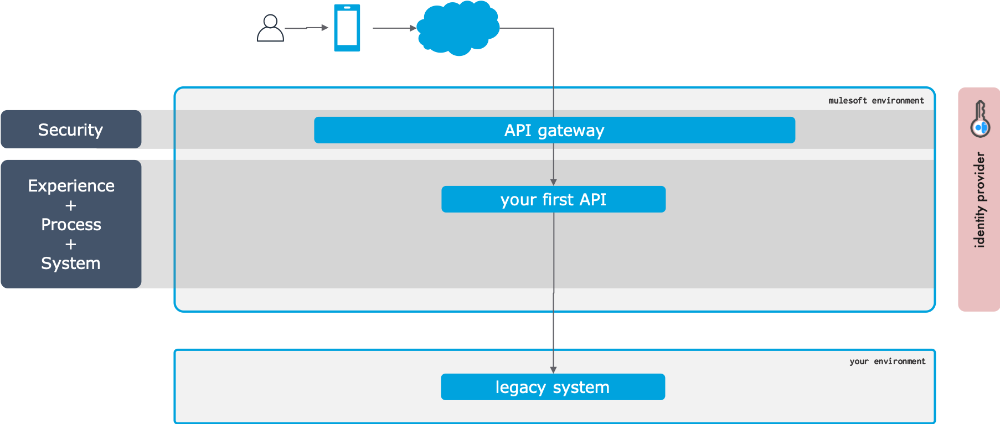
Second Step : Security
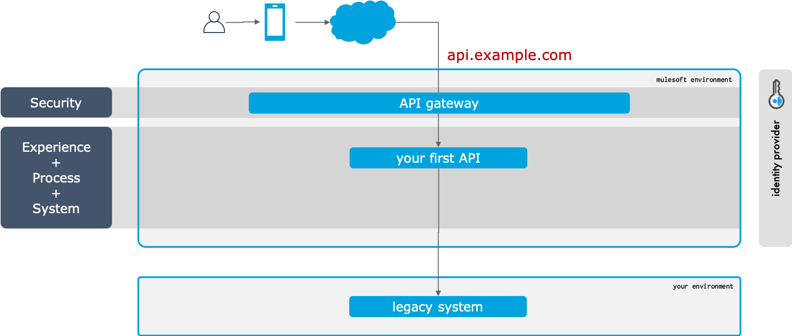
Second Step : Security
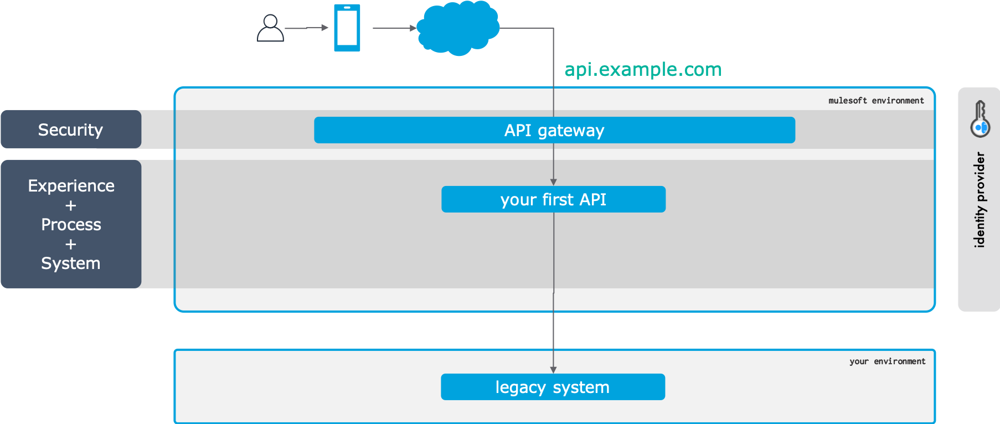
Second Step : Security
-
Good
- It is a litte bit safer
- You will have your APIS wit your domain
- It is possible to have better rules
-
Bad
- You will need more investment
- Still focused in projects
-
Suggestion
- Contact your security team
|
|
Second Step : Unlock
What you need to know
- Itermediate
- Network and Topology
- Load Balancing
- VPC
- DNS
- API Gateway
- CORS and XSS
- Identity Management
Third Step : To Strangle
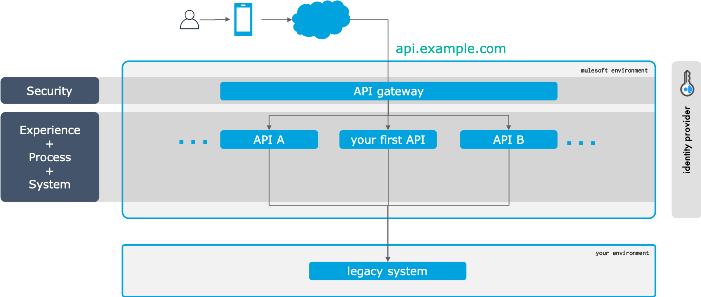
Third Step : To Strangle
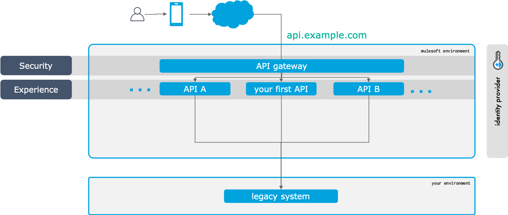
Third Step : To Strangle
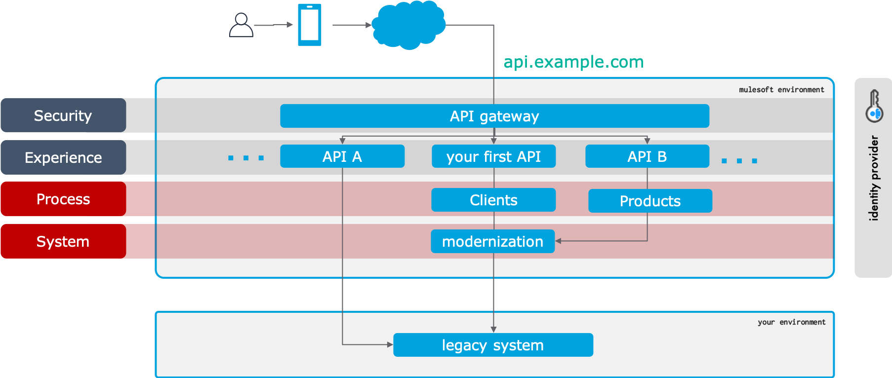
Third Step : To Strangle
How do you prove the value of this model?
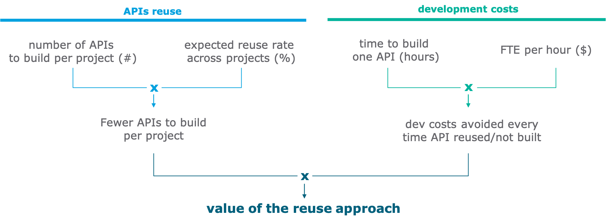
Third Step : To Strangle
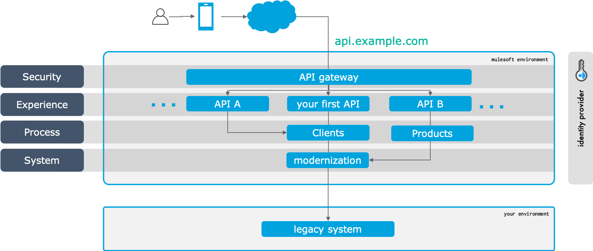
Third Step : To Strangle
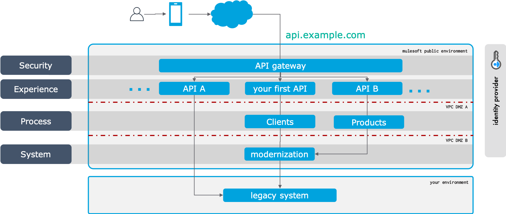
Third Step : To Strangle
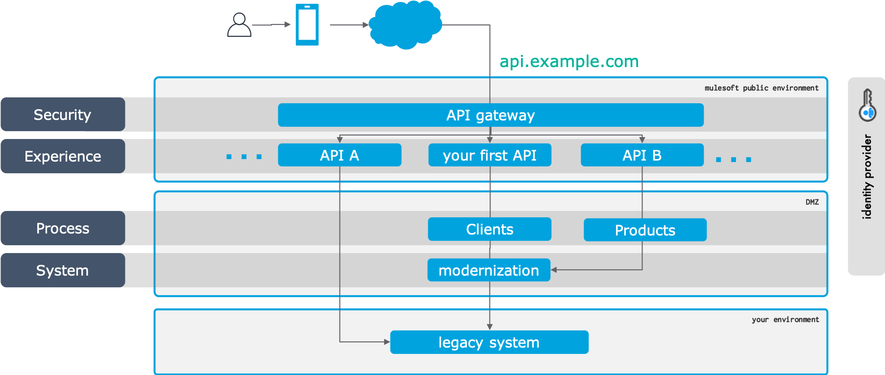
Third Step : To Strangle
- Where should I put my Process Layer?
- What kind of technology should I use?
- Cloudhub Platform
- Mulesoft ESB (on-premise)
- Anypoint Runtime Fabric
- Containers / Kubernetes
- Traditional Cloud / IaaS
|
|
Third Step : To Strangle
What you need to know
- Advanced
- Network and Topology
- Load Balancing
- VPC
- Anypoint Runtime Fabric
- Components and Architecture
- DDD
Fourth Step : Governance
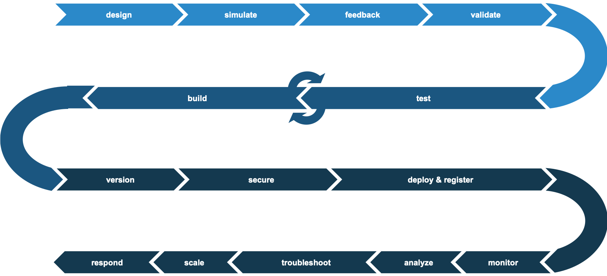
Fourth Step : Governance
Semantic Versioning
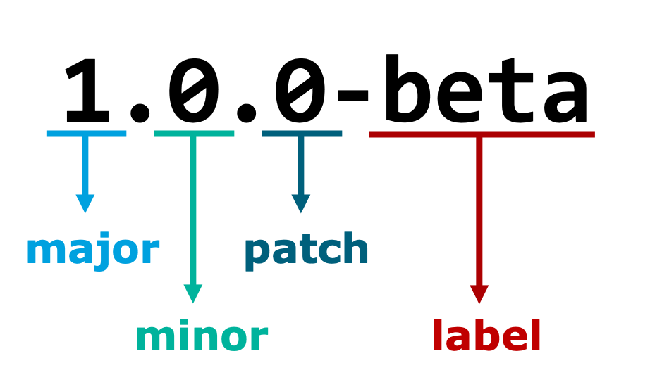
Fourth Step : Governance
Sunrise / Sunset
Beta, Production, Obsolete & Supported, Obsolete & Unsupported, Deprecated
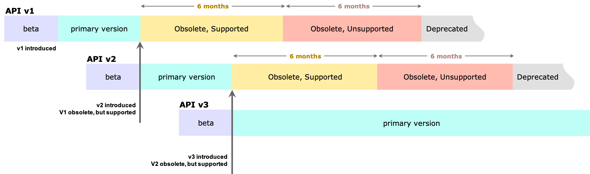
Fourth Step : Governance
Change Management and Branch Strategy
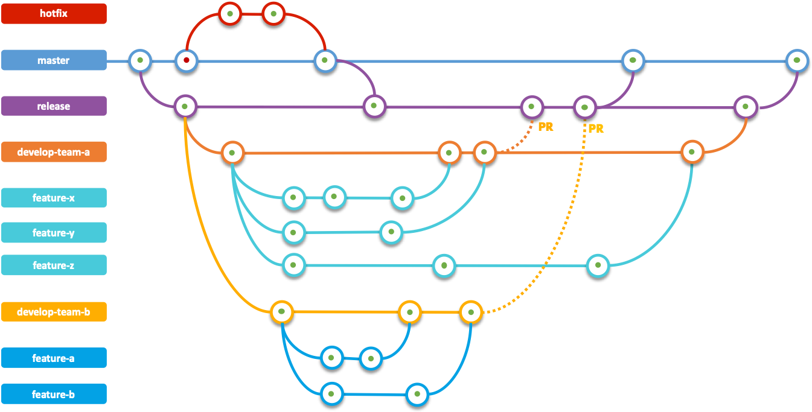
Fourth Step : Governance
What you need to know
- Specialist
- API Lifecycle
- Runtime Manager
- Exchange
- Anypoint client and Anypoint APIs
- Unit Tests
- Access Management
- DevSecOps
Fifth Step : Enablement & Automation

Fifth Step : Enablement & Automation
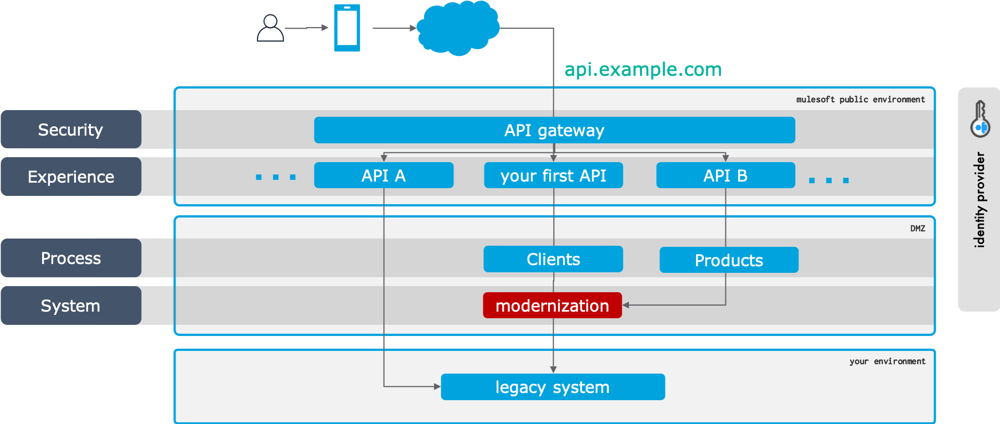
Fifth Step : Enablement & Automation
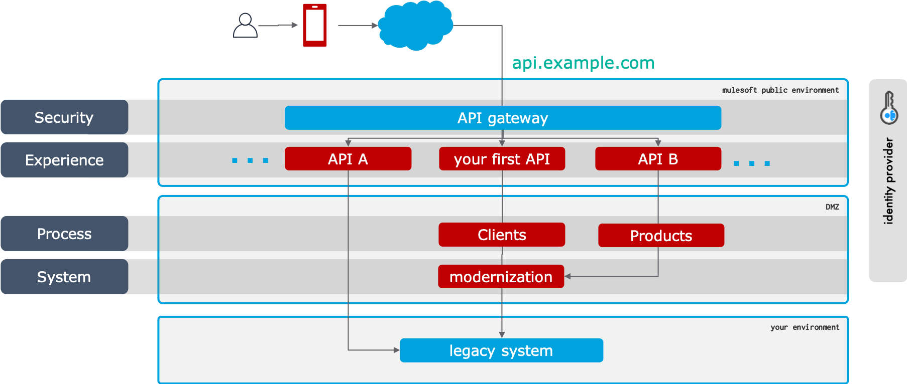
Fifth Step : Enablement & Automation
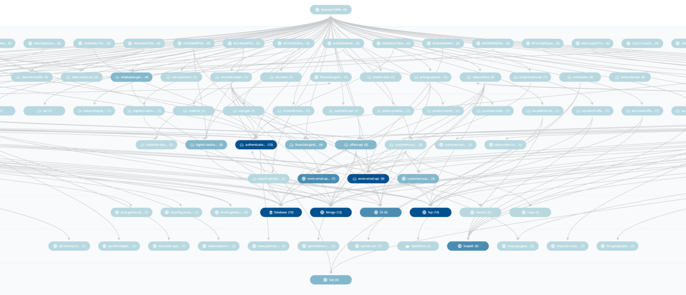
Fifth Step : Enablement & Automation
What you need to know
- Specialist
- Enterprise Integration Patterns
- SAGA Pattern
- Message Queues and Event Driven Architectures
- Communication Protocols (gRPC, HTTPS, WebSocket, etc.)
- ELK and Log4J2 configuration